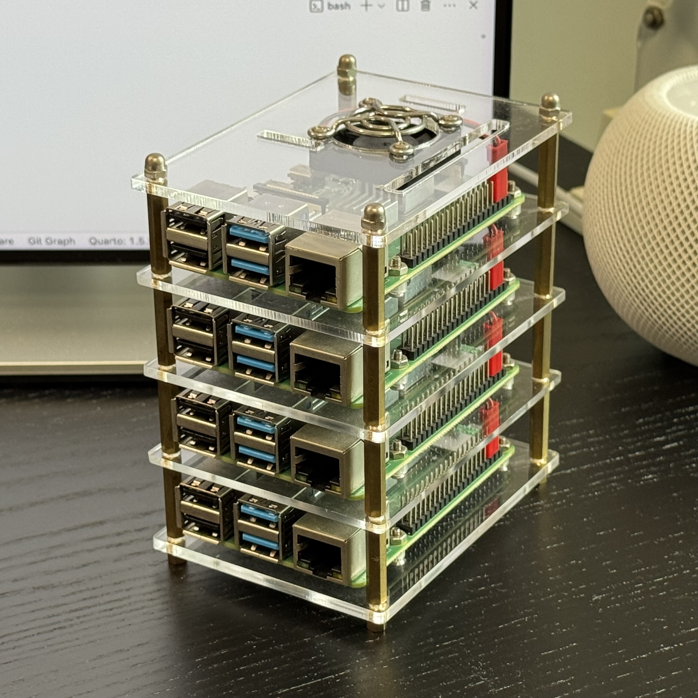

Kubernetes Cluster with Raspberry Pi
From zero to hero!
Start building your own Kubernetes (K8s) cluster with Raspberry Pi!
Check out this video from NetworkChuck for guidance and inspiration.
I’ve chosen to create a fully-fledged K8s cluster on Raspberry Pi, as a hands-on way to learn and troubleshoot Kubernetes. If you’d prefer a simpler setup, consider using lightweight distributions like K3s or K0s, which are optimized for ease of use on resource-constrained devices.
Materials
Here are the materials I started with to set up my Raspberry Pi Kubernetes cluster:
- 4 \(\times\) Raspberry Pi 4 Model B (4GB)
- 4 \(\times\) Micro SD cards (128GB)
- 4 \(\times\) RJ45 Ethernet cables
- 4 \(\times\) USB Type-C cables
- 4 \(\times\) USB chargers
- 1 \(\times\) Network switch
- 1 \(\times\) Acrylic tower case
Once assembled, the end product will look like this:

That wraps up the hardware setup! Now it’s time for the fun part.
Installing
Operating system
Let’s start by installing the OS. For this project, we’ll be using ubuntu-20.04.5-preinstalled-server-arm64+raspi.img.
Let’s bake some images onto the microSD cards. This part can feel tedious, but fortunately, there is a dedicated Raspberry Pi Imager from the official project that simplifies the process. It lets you select an OS from a dropdown list and burn images to the SD cards.
cloud-init gets handy when installing with configurations. it streamlines the process of setting up and configuring instances, whether you’re dealing with a cloud VM or a local server. By tweaking settings in user-data and network-config, you can:
- Set up user accounts, SSH keys.
- Install packages or run scripts on the first boot.
- Configure network settings like static IP addresses or DNS.
For my case, the network architecture is configured as:
ISP ─── modem
│
router ─── L2 switch
192.168.0.1 │
│ ├── knode-01 192.168.0.10
macbook ├── knode-02 192.168.0.11
192.168.0.100 ├── knode-03 192.168.0.12
└── knode-04 192.168.0.13The knode-01 will be configured as a control plane and rest as worker nodes. Check the example network-config file below.
network-config
version: 2
ethernets:
eth0:
1 dhcp4: no
addresses:
- 192.168.0.10/24
gateway4: 192.168.0.1
nameservers:
addresses:
- 8.8.8.8
- 8.8.4.4- 1
- Change the IPv4 address of the physical Raspberry Pi node by disabling DHCP and setting a static IP.
The Raspberry Pi will boot up within a couple of minutes. The ol’ping works great for checking the state (otherwise you can try using AngryIPScanner).
After booting up the servers, I recommend using tmux simply helps you run the same command across multiple SSH sessions simultaneously. Turn the sync on/off with Ctrl-bCtrl-b :: setw synchronize-panes on/off.
Kubernetes
The official documentation is here.
Also there are plenty of tutorials out there. A blog post by Daniel and a youtube by NetworkChuck helped me a lot.
Mainly, there are three components to install. Those are:
kubelet: Runs on each node in a Kubernetes cluster, managing containerized applications and ensuring their health.kubeadm: Assists in setting up and configuring Kubernetes clusters by initializing the control plane and joining nodes.kubectl: Command-line tool for interacting with the Kubernetes API, enabling deployment, management, and troubleshooting of applications within the cluster.
Follow the steps below.
Turn off swap memory perpetually
- 1
- Turns off swap memory temporarily.
- 2
- Disables swap on boot to keep it turned off after rebooting.
Install CRI runtime
kubelet requires a CRI runtime to work. In this tutorial, we will be installing containerd.
This tutorial follows the official installation guide.
sudo apt-get update
sudo apt-get install -y apt-transport-https ca-certificates curl gpg
curl -fsSL https://pkgs.k8s.io/core:/stable:/v1.31/deb/Release.key | sudo gpg --dearmor -o /etc/apt/keyrings/kubernetes-apt-keyring.gpg
for pkg in docker.io docker-doc docker-compose docker-compose-v2 podman-docker containerd runc; do sudo apt-get remove $pkg; done
sudo apt-get update
sudo apt-get install ca-certificates curl
sudo install -m 0755 -d /etc/apt/keyrings
sudo curl -fsSL https://download.docker.com/linux/ubuntu/gpg -o /etc/apt/keyrings/docker.asc
sudo chmod a+r /etc/apt/keyrings/docker.asc
echo \
"deb [arch=$(dpkg --print-architecture) signed-by=/etc/apt/keyrings/docker.asc] https://download.docker.com/linux/ubuntu \
$(. /etc/os-release && echo "$VERSION_CODENAME") stable" | \
sudo tee /etc/apt/sources.list.d/docker.list > /dev/null
sudo apt-get update
sudo apt install -y containerd.ioConfigure CRI runtime
Check the official guide
sudo sed -i '$ s/$/ cgroup_enable=cpuset cgroup_enable=memory cgroup_memory=1 swapaccount=1/' /boot/firmware/cmdline.txt
cat <<EOF | sudo tee /etc/sysctl.d/k8s.conf
net.bridge.bridge-nf-call-ip6tables = 1
net.bridge.bridge-nf-call-iptables = 1
net.ipv4.ip_forward = 1
EOF
sudo sysctl --system
cat <<EOF | sudo tee /etc/modules-load.d/containerd.conf
overlay
br_netfilter
EOF
sudo mkdir -p /etc/containerd
containerd config default | sudo tee /etc/containerd/config.toml/etc/containerd/config.toml
[plugins."io.containerd.grpc.v1.cri".containerd.runtimes.runc]
...
[plugins."io.containerd.grpc.v1.cri".containerd.runtimes.runc.options]
1 SystemdCgroup = true- 1
-
The SystemdCgroup parameter is a configuration setting in container runtimes, such as
containerd, to manage cgroups (control groups) using systemd rather than relying on the runtime’s native cgroup management. SettingSystemdCgroup=trueenables systemd to control the cgroup hierarchy for containers.
sudo systemctl restart containerdkubelet, kubeadm and kubectl
sudo systemctl restart containerd
sudo apt-get update
sudo apt-get install -y apt-transport-https ca-certificates curl gpg
curl -fsSL https://pkgs.k8s.io/core:/stable:/v1.31/deb/Release.key | sudo gpg --dearmor -o /etc/apt/keyrings/kubernetes-apt-keyring.gpg
echo 'deb [signed-by=/etc/apt/keyrings/kubernetes-apt-keyring.gpg] https://pkgs.k8s.io/core:/stable:/v1.31/deb/ /' | sudo tee /etc/apt/sources.list.d/kubernetes.list
sudo apt-get update
sudo apt-get install -y kubelet kubeadm kubectl
sudo apt-mark hold kubelet kubeadm kubectl
sudo systemctl enable --now kubeletInitialize control-plane
We are planning to use Flannel for container networking.
Firstly, initialize the control plane with kubeadm init command and later join the worker nodes.
sudo kubeadm init --pod-network-cidr=10.244.0.0/16
mkdir -p $HOME/.kube
sudo cp -i /etc/kubernetes/admin.conf $HOME/.kube/config
sudo chown $(id -u):$(id -g) $HOME/.kube/configJoin worker nodes
1kubeadm join 192.168.0.10:6443 \
--token 1b120a.0349bfe2a349b331 \
--discovery-token-ca-cert-hash \
sha256:09321a32...39058c12- 1
- The IP address for the control plane’s API server with the port defaulting to 6443.
Apply CNI plugin
Flannel is a popular CNI (Conatainer Networking Interface) plugin in Kubernetes that provides an unified network across the entire cluster.
Flannel enables this by:
Overlay Network: Flannel creates an overlay network, allowing pods on different nodes to communicate as though they were on the same local network. This abstraction flattens the network by providing a single, consistent IP address space for all pods within the cluster.
IP Address Management: Each pod receives a unique IP address within this flat network, enabling packets to travel between nodes without requiring complex routing or Network Address Translation (NAT). This makes inter-node communication more straightforward.
Flexible Backends: Flannel offers different backends to implement the overlay network. For example:
VXLAN: This backend encapsulates network traffic in UDP packets, enabling scalable and simple flat networking.
Host-GW: This backend enables direct routing between nodes on the same subnet, which can be useful in specific networking environments.
SSH into the control-plane and create pods for CNI networking.
wget https://github.com/flannel-io/flannel/releases/latest/download/kube-flannel.yml
kubectl apply -f kube-flannel.ymlApply LoadBalancer
We have created a baremetal Kubernetes cluster. To properly load balance services, consider using MetalLB.
wget https://raw.githubusercontent.com/metallb/metallb/v0.14.8/config/manifests/metallb-native.yaml
kubectl apply -f metallb-native.yamlmetallb-config.yaml
apiVersion: metallb.io/v1beta1
kind: IPAddressPool
metadata:
name: metallb-pool-01
namespace: metallb-system
spec:
addresses:
1 - 192.168.0.20-192.168.0.30
---
apiVersion: metallb.io/v1beta1
kind: L2Advertisement
metadata:
name: metallb-adv-01
namespace: metallb-system
spec:
ipAddressPools:
- metallb-pool-01- 1
-
This IP range is used by MetalLB to assign external IPs to LoadBalancer services. Ensure that the range falls within your network’s subnet (e.g.,
192.168.0.0/24)
kubectl apply -f metallb-config.yamlEnabling NVIDIA driver in Kubernetes
I found a well documented tutorial post by Deagwon Bu. Highly regared.
The version of the NVIDIA driver on the host sets the upper limit for the NVIDIA runtime version that can be utilized in the container.
Firstly, install the nvidia-container-toolkit to enable GPU-accelerated containers. There is an official install guide for this.
curl -fsSL https://nvidia.github.io/libnvidia-container/gpgkey | sudo gpg --dearmor -o /usr/share/keyrings/nvidia-container-toolkit-keyring.gpg \
&& curl -s -L https://nvidia.github.io/libnvidia-container/stable/deb/nvidia-container-toolkit.list | \
sed 's#deb https://#deb [signed-by=/usr/share/keyrings/nvidia-container-toolkit-keyring.gpg] https://#g' | \
sudo tee /etc/apt/sources.list.d/nvidia-container-toolkit.list
sudo apt-get update
sudo apt-get install -y nvidia-container-toolkitWhen using containerd, config.toml is where NVIDIA drivers are defined.
/etc/containerd/containerd.toml
[plugins."io.containerd.grpc.v1.cri".containerd.runtimes]
...
[plugins."io.containerd.grpc.v1.cri".containerd.runtimes.runc]
...
[plugins."io.containerd.grpc.v1.cri".containerd.runtimes.runc.options]
...
SystemdCgroup = true
[plugins."io.containerd.grpc.v1.cri".containerd.runtimes.nvidia]
privileged_without_host_devices = false
runtime_engine = ""
runtime_root = ""
runtime_type = "io.containerd.runc.v1"
[plugins."io.containerd.grpc.v1.cri".containerd.runtimes.nvidia.options]
BinaryName = "/usr/bin/nvidia-container-runtime"
SystemdCgroup = truesudo systemctl restart containerdWhen using K3s by Rancher, also amend the following file:
/var/lib/rancher/k3s/agent/etc/containerd/config.toml
[plugins."io.containerd.grpc.v1.cri".containerd.runtimes."nvidia"]
runtime_type = "io.containerd.runc.v2"
[plugins."io.containerd.grpc.v1.cri".containerd.runtimes."nvidia".options]
BinaryName = "/usr/bin/nvidia-container-runtime"
SystemdCgroup = truesudo systemctl restart k3snodeSelector can be useful when applying NVIDIA plugin to only GPU enabled nodes.
kubectl label nodes <node> gpu=nvidia
wget https://raw.githubusercontent.com/NVIDIA/k8s-device-plugin/v0.16.2/deployments/static/nvidia-device-plugin.ymlnvidia-device-plugin.yml
apiVersion: apps/v1
kind: DaemonSet
metadata:
name: nvidia-device-plugin-daemonset
namespace: kube-system
spec:
selector:
matchLabels:
name: nvidia-device-plugin-ds
updateStrategy:
type: RollingUpdate
template:
metadata:
labels:
name: nvidia-device-plugin-ds
spec:
1 nodeSelector:
gpu: nvidia
...- 1
- Add the following lines.
kubectl apply -f nvidia-device-plugin.ymlCreate the file below and apply it.
nvidia-runtime-class.yml
apiVersion: node.k8s.io/v1
kind: RuntimeClass
metadata:
name: nvidia
handler: nvidiakubectl apply -f nvidia-runtime-class.ymlIt’s all set! Run pods with GPU resource. Check the template below.
gpu-test.yaml
apiVersion: v1
kind: Pod
metadata:
name: gpu-pod
spec:
restartPolicy: Never
1 runtimeClassName: nvidia
2 nodeSelector:
gpu: nvidia
containers:
- name: gpu-container
image: nvidia/cuda:12.1.0-runtime-ubuntu20.04
resources:
limits:
cpu: "500m"
memory: "1Gi"
3 nvidia.com/gpu: 2
env:
- name: CUDA_VISIBLE_DEVICES
value: "0,1"
- name: TF_FORCE_GPU_ALLOW_GROWTH
value: "true"
- name: CUDA_DEVICE_ORDER
value: "PCI_BUS_ID"- 1
-
Set the runtime defined in
config.toml. - 2
- Allow pod creation in GPU enabled nodes.
- 3
- Set the number of GPUs.
Accessing
There are typical authentication methods to access the cluster: Bearer tokens and CA certificates. However, kubectl can support other methods such as client certificates and external authentication providers.
The ~/.kube/config file contains the CA certificate issued when initializing the node.
To use the same configuration on another system, you can transfer the config file via sftp to the remote computer.
~/.kube/context
apiVersion: v1
kind: Config
clusters:
- name: raspberrypi
cluster:
certificate-authority-data: <super-secret>
server: https://<public-ip>:6443
users:
- name: raspberrypi-admin
user:
client-certificate-data: <super-secret>
client-key-data: <super-secret>
contexts:
- name: raspberrypi-admin@raspberrypi
context:
cluster: raspberrypi
user: raspberrypi-admin
current-context: raspberrypi-admin@raspberrypi
preferences: {}With your router configured to forward requests from the public IP to the private IP, this sould work seamlessly.